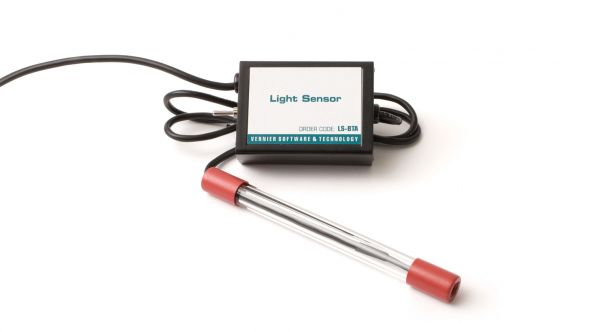
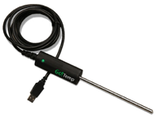

Information About Vernier Elementary Energy Efficiency
Quick Links
- Light Sensor Tech Tips
- Surface Temperature Tech Tips
- Infrared Thermometer Tech Tips
- Temperature Probe Tech Tips
What is Vernier Elementary Energy Efficiency?
Vernier Elementary Energy Efficiency is a kit that contains many scientific Vernier sensors that can be used to measure and display data. The Vernier sensors in the Energy Efficiency kit work with Graphical Analysis to display data on a portable screen.
How Do You Use Energy Efficiency?
Sensors
Select each item to learn more.
Light Probe
The light probe can be used to collect visible light data. To use the light probe, explore Learning To Use a Light Probe.

IR Thermometer
The infrared thermometer can be used to collect the temperature of different materials without touching the material. To use the IR thermometer:

- Turn on the infrared thermometer (IR thermometer) by pushing the MEAS button (this is required for portable use and if you are using the computer to collect and review data).
- Point the sensor at the material you are measuring the temperature of (the IR thermometer works only in degrees Celsius, but it will convert the temperature for you if you use the Logger Lite software and select the Switch C/F button). See the What You Should Know section to learn how to convert degrees Fahrenheit to degrees Celsius.
- The temperature measurement is acquired from a circular region of the material. The laser button on the IR thermometer helps you determine what spot your sensor is collecting temperature data from. The closer you are to the object you are measuring, the more accurate your reading. The farther away it is, the bigger the data spot. Use caution when using the tool.
- The Hold button will freeze the temperature measurement when you are ready to write down your data. To unfreeze your temperature reading, press the Hold button again.
- To turn the sensor off, push the MEAS button again. The sensor will automatically shut off in 30 minutes.
Surface Temperature Sensor
The surface temperature sensor can be used to measure the temperature of the surface of objects like skin or a table top. To use the surface temperature sensor:
- Connect the sensor to the interface (LabQuest Mini, LabQuest 2, etc.).
- Start the appropriate data-collection software (Logger Pro, Logger Lite, LabQuest App) if not already running, and choose New from File menu. The software will identify the sensor and load a default data-collection setup.

Temperature Probe
The temperature probe can be used to measure the temperature of liquids like hot water or cold water. To use the temperature probe:
- Connect the sensor to the interface (LabQuest Mini, LabQuest 2, etc.).
- Start the appropriate data-collection software (Logger Pro, Logger Lite, LabQuest App) if not already running, and choose New from File menu. The software will identify the sensor and load a default data-collection setup.

How to Use Graphical Analysis
Graphical Analysis is the tool used to collect and show the Vernier sensor data. To learn more about how to use Graphical Analysis check out the Vernier Graphical Analysis Tutorial Video.
Direct Link: Vernier Graphical Analysis Tutorial Video